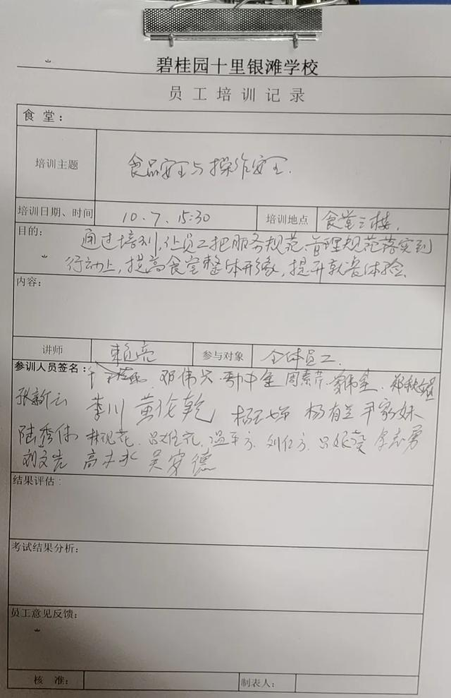

博采众长，融合共享 | 龙图教育辅助教育板块联动K12国际化学校开展多项交流合作
他山之石，可以攻玉。为进一步加强龙图教育教育集团内各兄弟单位间的交流合作，促进教育协同发展，近日，龙图...
查看详情>>2020.10.29
学生时期，是否总是担心阿姨打饭“手抖”？是否总是觉得"中国第九大菜系”难吃？在龙图教育园校的食堂里，这些都不是问题，也从来都不是学生们的困扰。不同于传统的定餐形式，我们的食堂主人是学生自己，通过自助供餐，不仅再也不用担心“手抖式”打饭，更有丰富多样、美味可口、中西汇聚的营养菜式，给予学生充分的自主选择权，暖心又暖胃，营养又健康，赢得学生和家长们纷纷点赞！
菜品好看更好吃❤️
民以食为天，“吃”永远处在第一位。“大锅饭”能不能做得好吃，让孩子有食欲，这也是家长们关心的焦点。本着一切以学生为中心的原则，龙图教育后勤服务中心（以下简称“中心”）从2019年开始，在园校里逐步试点自助餐，如龙图教育增城碧桂园学校、龙图教育碧桂园实验学校、龙图教育五邑碧桂园中英文学校、龙图教育凤凰城中英文学校、龙图教育华南碧桂园学校等，给师生提供更安全更美味的餐食。
吃得超开心的小朋友
01、科学制定专业化食谱，荤素搭配均衡营养
中心以标准化和专业化为基准，引进第三方食谱测评软件——童帮软件（针对幼儿园学生），中小学生食谱以国家卫计委发布的“WS/T 554 学生餐营养指南”为评估标准，结合学生身体发展特点和个体差异化需求，使食谱合理搭配、营养均衡。通过软件实现对园校菜谱营养的科学、量化、动态监控，并识别优秀食谱形成标杆食谱（将营养得分达到90分的食谱定为优秀标杆食谱）进行推广，帮扶食谱营养得分较低园校进行优化提升。
快要挑花眼的自助餐
在制定食谱时，中心以中国营养学会发布的《平衡膳食宝塔》、《营养素摄入参考量》为标尺；比例适当，保证营养均衡，碳水化合物、蛋白质、脂肪和膳食纤维等摄入比例均衡；带量食谱份量根据不同年龄段的摄入量进行合理设置，满足不同年龄段学生的成长需求。
食谱制定科学均衡✌️
同时，园校每周菜谱不重复，确保菜品丰富多样。以下方幼儿园一周菜谱为例，每天为二餐二点，即早餐、加餐、中餐、午点。一般来说，园校都选用当季水果、蔬菜，且鱼类、禽类和畜类每天交替食用，保证学生营养摄入均衡。
不重样的菜谱
02、“光盘行动”从我做起，拒绝“剩”宴蔚然成风
“一粥一饭，当思来之不易；半丝半缕，恒念物力维艰。”龙图教育园校将“厉行节约、反对浪费”贯穿于日常教育教学管理的全过程，并结合世界粮食日、中国农民丰收节等重要时间节点，深入开展爱粮节粮教育。
小餐桌体现了大文明。中心大力倡导“光盘行动”，通过改变供餐形式，引导学生按需选择菜品，尊重每一位学生的不同需求，不仅可有效避免不必要的浪费，避免“一刀切”，还能培育学生节约的意识，从而养成良好的生活习惯，共同营造爱粮节粮的社会风尚。
“舌尖上的校园安全”一直牵动着亿万家长的心。自成立以来，中心一直加强对园校膳食管理的集团化管控，多措并举夯实校园食品安全底线，全面系统地提升园校后勤服务质量，努力保障学生的健康安全。
这餐食爱了爱了
01、完善供应商管理体系，实行"严格准入、动态管理"
完善的供应商管理体系是保障食品安全的基础。为此，中心从资质审核、现场考察、准入评估等维度严格把控供应商的筛选，守好校园食品安全的第一道门槛。同时，中心根据“优胜劣汰”的原则，通过定期汇总评估、不通知式抽查等形式进行动态管理。一旦发现供应商踩红线，中心将立即采取解决措施。
针对优质的供应商，中心也会在园校中进行资源共享，从而建立稳定的供应链，助力校园食品安全。
日常羡慕的美食
02、统一食材验收和加工标准，源头杜绝食品安全隐患
保障校园食品安全，要抓食材验收和加工，可从源头上避免不安全；要抓食堂标准化建设，防止加工、储藏等环节不安全。中心把安全作为最优先的考量，对食材的采购、配送、供应等环节实行统一规范管理，确保学校食堂食材来源渠道公开、质量可溯、安全可靠。
在龙图教育的校园里，每天都上演着这样一幕：清晨，供应商送达各类食材，食堂人员要检查新鲜度、确认检疫、检测证明或报告合格、证照齐全后，双方签字留存纸质记录，做好索票索证收集和登记，便于追溯。在食堂内部，有关食品的各种单据汇编成册并张贴在明显位置，如采购和验收人员名单、工作职责、SOP（标准作业程序）流程图等。

食材质量验收
加工和储存食材时，保持环境干净整洁是关键。园校根据食材先进先出、分区分类储存、散装原料密封储存等标准进行严格管理，杜绝工作区产生安全隐患。同时，中心还规定园校必须进行食堂卫生检查&虫害管理，每月聘请第三方虫害消杀服务公司进行2次消杀，守护师生“舌尖上的食品安全”。
干净整洁的环境
在日常的后勤管理中，人员的培训也至关重要。中心定期开展《食品安全法》《食品安全法实施条例》《餐饮服务食品安全操作规范》等法律法规知识讲座，重点突出餐饮安全法规、食品卫生知识的培训学习，切实提高园校食堂从业人员整体素质。今年9-10月，中心面向园校后勤从业人员开展了“第一届食品安全知识竞赛”，通过线上答题的形式，夯实食品安全知识，规范日常操作，从而更好地服务师生和家长。


园校后勤人员培训
03、健全监督管理机制，教师陪餐已成“标配”
除了食药监执法人员每月不定期来园校进行食品安全检查，中心还从集团、园校两个维度搭建了健全的膳食监督管理机制。从集团的角度，中心品控会不定期（每学期至少2次）进行卫生审核，并输出报告；从园校的角度，食堂经理/主管每周进行1次卫生自查，及时对问题进行跟进整改；需中心协助的上报集团及园校后勤负责人一并跟进处理。园校也会对食材的开支等进行公示，接受家长的定期查看和监督。
家长为园校餐食点赞
校园食品安全关系到广大师生的健康成长。为此，中心在食品留样和陪餐方面也制定了统一的标准。园校设置了专用食品留样柜，每餐留样且储存在专用冷藏设备48小时以上。同时，严格规范留样信息：每样餐食的留样量不少于125g；储存容器清洗消毒、专用、密闭；标识留样人、留样时间、留样品名、留样数量等。
园校食品留样
教师陪餐制是龙图教育园校的“标配”。陪餐不能流于形式。每餐园校老师与学生共同用餐，让他们在与学生共担风险的过程中及时发现问题，自觉地对食堂的环境卫生、食材配送与储存、出品质量等各方面加强监督，并及时向中心反馈问题，中心协助解决和落实整改预防措施。
园校开放日家长检查后勤
食品安全问题关系到广大师生、家长的切身利益。食材、存储、加工、烹调、供餐、消毒、监控、管理、共治、陪餐等，每个环节都不能大意。未来，龙图教育后勤服务中心将继续推进校园食品安全保障的长效管理机制，实行“精细化管理”，力求在细节上不断完善，为每一个孩子的健康成长保驾护航。
制造创新工业
 分享：
分享：
他山之石，可以攻玉。为进一步加强龙图教育教育集团内各兄弟单位间的交流合作，促进教育协同发展，近日，龙图...
查看详情>>